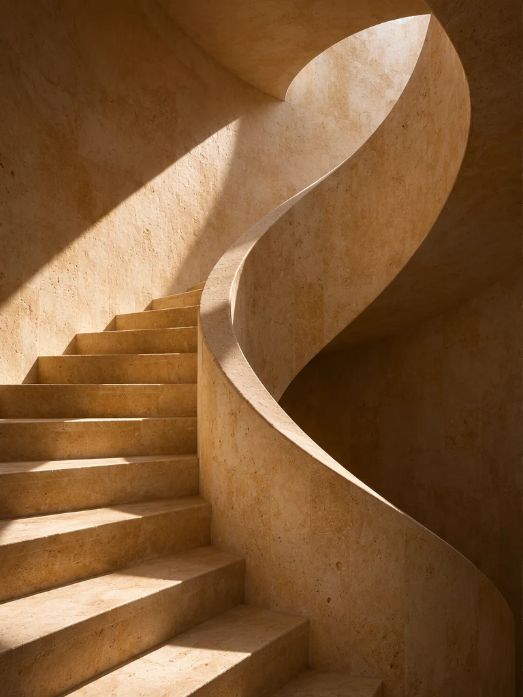

Composer les volumes, dégager un passage, choisir la matière que la main va toucher. L’espace se dessine à partir des gestes du quotidien.
L’atelier · Tanger
Halah Bakkali
Architecte d’intérieur et designer environnemental, Halah Bakkali dirige Hal’in Mimar. Ses deux disciplines se rencontrent à l’échelle du lieu, depuis la disposition d’une pièce jusqu’à son ouverture sur l’extérieur.
Ses disciplinesCompétences
Du trait à l’espace.
Suivre la lumière au fil de la journée. Dans le patio, l’ombre d’un olivier et la fraîcheur de la pierre invitent à s’attarder.

Étude conceptuelle
Études de matière
Patio solaire
Lire l’étude
Un olivier dessine une ombre mobile sur la pierre. Le banc prolonge le mur et laisse le centre du patio ouvert sur le ciel.
Terre, pierre, linSalon calcaire
Lire l’étude
Le canapé ocre suit la courbe de la cloison. Une niche creusée dans le mur accueille quelques objets et laisse la lumière glisser sur l’enduit.
Chaux, travertin, textileCafé zellige
Lire l’étude
Le zellige vert accroche la lumière derrière un comptoir en bois sombre. Le rythme des tabourets ménage des places pour une pause à deux.
Zellige, noyer, céramiqueGalerie
Atlas visuel.
Espaces imaginés, surfaces et jeux de lumière. Ouvrez une image pour en observer le détail.
Correspondance
Parlons de votre lieu.
Hal’in Mimar
Groupement Raha
GH11, imm 61, RDC, N° 1
Gzennaya · Tanger